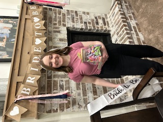

Molli Batty
My degree is Web Design and Development, and hope to find a remote job building websites. Some things I like to do is bird watch, paint, doodle, and cake decorate. I have been cake decorating and bird watching since 2020. I am married, and have been married since April 19th, 2024.
I am hoping to learn in this class new code like we are now, and how I can use my degree for my future! I have been a member of the Church of Jesus Christ of Latter Day Saints my entire life. My favorite scripture is D+C 31:13. I'm excited to be in this class!